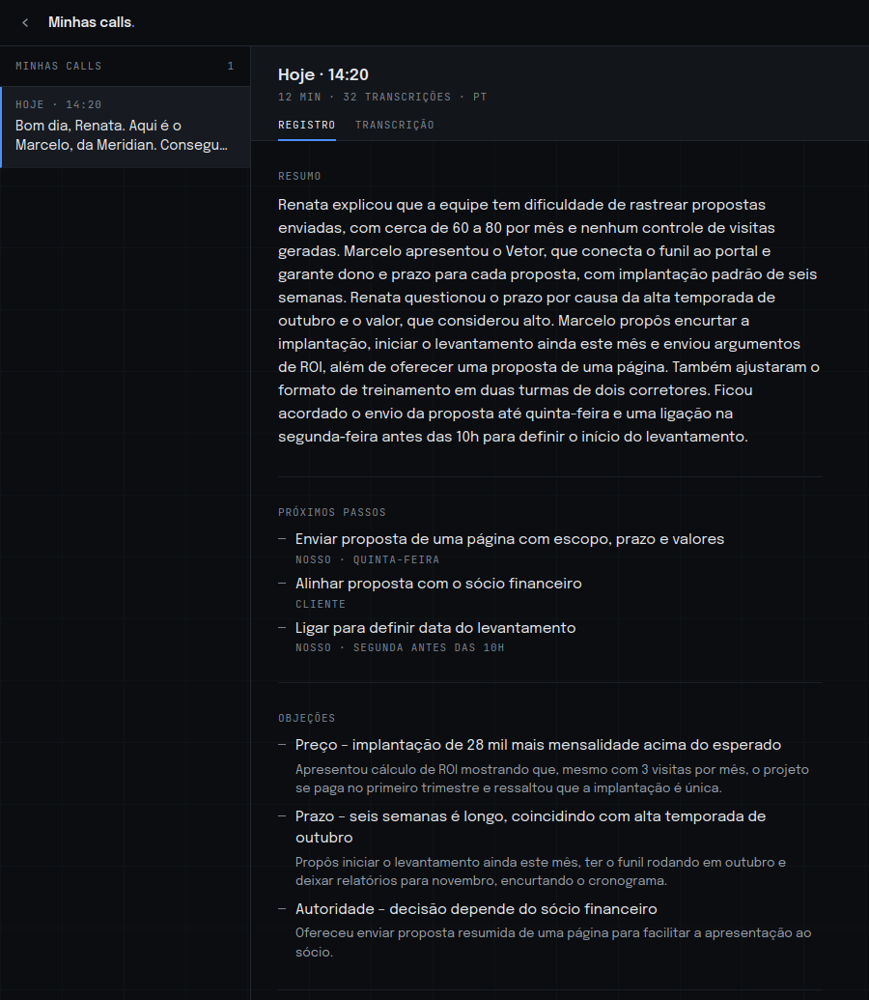
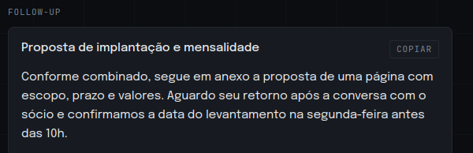
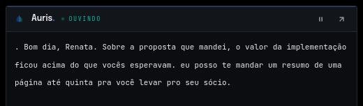
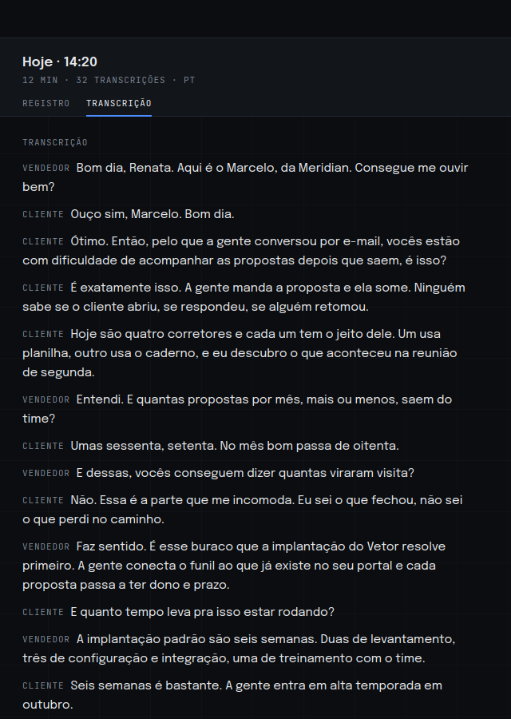
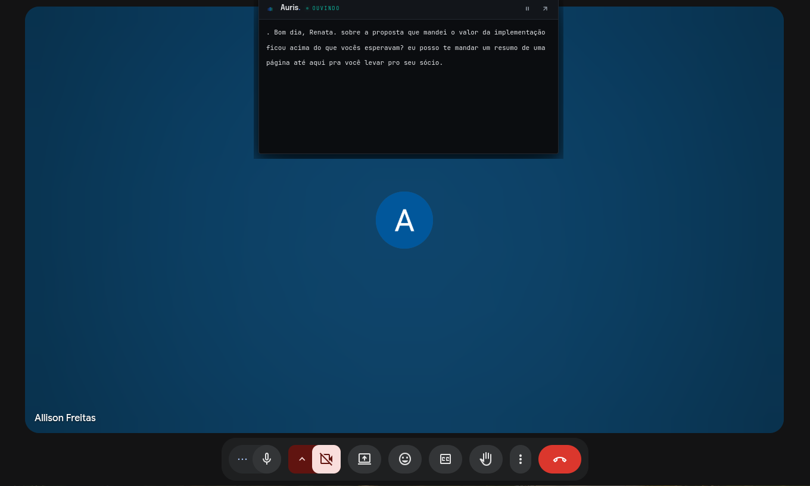

Cada call do seu time vira resumo, próximos passos e follow-up pronto.
Você não esteve na reunião e, uma semana depois, ninguém sabe direito o que foi combinado — nem se o follow-up saiu. O Auris registra cada call sem entrar nela.
Uma call em dois canais, virando registro
Objeções
- Prazo seis semanas caem na alta temporada
- Preço implantação e mensalidade acima do esperado
- Autoridade a decisão depende do sócio financeiro
Próximos passos
- Enviar proposta de uma página com escopo, prazo e valores nosso · quinta-feira
- Alinhar proposta com o sócio financeiro cliente
- Ligar para definir data do levantamento nosso · segunda antes das 10h
Transcrição de uma call de demonstração, com as falas na ordem em que saíram. O registro à direita é o que o Auris monta a partir dela.
Times que vendem por reunião.
- Consultoria e agência. Reuniões longas, com muito combinado que não cabe na memória de ninguém.
- Software house e SaaS. Call técnica onde a objeção de hoje é a mesma que apareceu na semana passada.
- Imobiliária, corretora, escola. Vendedor que fecha no telefone e não tem tempo de escrever nada depois.
Três passos, nenhum bot na sala.
-
01
O vendedor abre a reunião onde já abre hoje.
Meet, Teams, Zoom, WhatsApp no computador. O Auris fica numa janela ao lado e ele clica em Iniciar.
-
02
O Auris ouve o áudio do computador.
Não entra na chamada e não aparece na lista de participantes. Ele escuta duas fontes, em separado:
- saída do computador tudo que o cliente fala
- microfone tudo que o vendedor fala
É essa separação que faz a objeção ficar no nome de quem levantou e a resposta no nome de quem deu.
-
03
Ao encerrar, é só gerar o registro.
Resumo, próximos passos, objeções e o e-mail de follow-up aparecem na tela de calls, prontos para revisar.
Quatro coisas por call.
- Resumo
- Cinco a oito linhas do que foi tratado e onde a conversa parou. É o que deixa você entender a reunião sem ter estado nela.
- Próximos passos
- Cada ação com o responsável e o prazo, quando o prazo foi dito em voz alta. Se ninguém combinou nada, o registro diz isso — que é a informação mais útil que uma call pode devolver.
- Objeções
- O que o cliente levantou e o que o vendedor respondeu. Lido em série, é onde aparecem os padrões que se repetem no time.
- Follow-up pronto
- Um e-mail curto retomando o que foi combinado. O vendedor copia, revisa e envia. O Auris nunca envia nada sozinho.


Uma janela ao lado, e só.
O Auris fica numa janela pequena por cima da reunião, sem roubar o foco e sem entrar na chamada. Enquanto ninguém fala, ele é só isto:
Quando alguém fala, ele abre e vai transcrevendo. Dá para perguntar sobre o que já foi dito sem interromper ninguém, e o que está em outro idioma chega traduzido.

Cada linha fica marcada com quem falou, e é isso que separa a objeção do cliente da resposta do vendedor quando o registro é gerado.


Reunião em inglês, registro em português.
A fala do cliente estrangeiro chega traduzida enquanto ele fala. No fim, o resumo sai em português para você ler e o e-mail de follow-up sai no idioma da call para o vendedor enviar.
O que acontece com o áudio.
- O Auris não grava áudio. O som da reunião é enviado a um provedor externo para virar texto, e nenhum arquivo de áudio é guardado — nem na sua máquina, nem em servidor nosso.
- O texto passa por esse mesmo provedor. Quando o registro é gerado, quando uma fala é traduzida e quando o vendedor pergunta algo durante a call, o trecho da transcrição é enviado para lá.
- As transcrições e os registros ficam no computador do vendedor, em arquivos da própria máquina. Não guardamos nada disso em servidor nosso — e a consequência é que o histórico não acompanha quem troca de computador.
- Sua conta guarda só login e plano. Nenhum conteúdo de call fica associado a ela.
- Qualquer call pode ser apagada do histórico a qualquer momento, pelo próprio app.
- O Auris não envia e-mail sozinho. Tudo que sai em nome do vendedor passa por ele antes.
Grátis durante o beta.
Grátis enquanto está em beta
Use com o time inteiro, sem cartão. O preço por vendedor entra depois do beta, e quem estiver usando vai saber antes de qualquer cobrança.
BaixarO que costumam perguntar.
Precisa de bot entrando na reunião?
Não. O Auris captura o áudio que sai do computador do vendedor. Ninguém na chamada vê um participante a mais.
Funciona com Meet, Teams, Zoom, WhatsApp?
Funciona com qualquer um deles, porque não depende da plataforma da reunião — depende do áudio do computador.
Funciona no Mac?
Ainda não. Hoje existe versão para Windows e para Linux. Mac está fora por enquanto.
Preciso usar fone de ouvido?
Recomendamos. É com fone que o Auris consegue separar o que o vendedor falou do que o cliente falou. Sem fone, a voz do cliente volta pelo microfone e essa separação fica pior.
O áudio da reunião fica gravado?
O Auris não guarda áudio. O som é enviado para transcrição e o que fica é o texto, no computador do vendedor. Em trânsito, ele passa pelo provedor de transcrição.
Posso apagar tudo?
Sim. Cada call pode ser excluída pelo app, e os arquivos ficam na máquina do vendedor.
Integra com CRM?
Ainda não. Hoje o follow-up e o resumo são copiados do app para onde você quiser.
O cliente precisa saber que a reunião está sendo transcrita?
Recomendamos avisar. As regras variam conforme o tipo de reunião e o contexto, então confirme o que se aplica ao seu caso antes de usar.